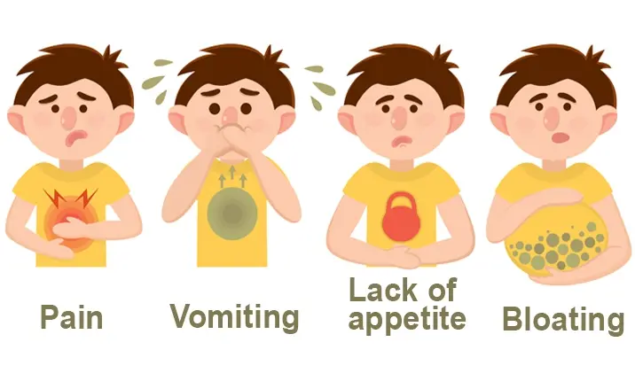
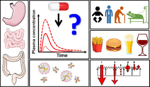
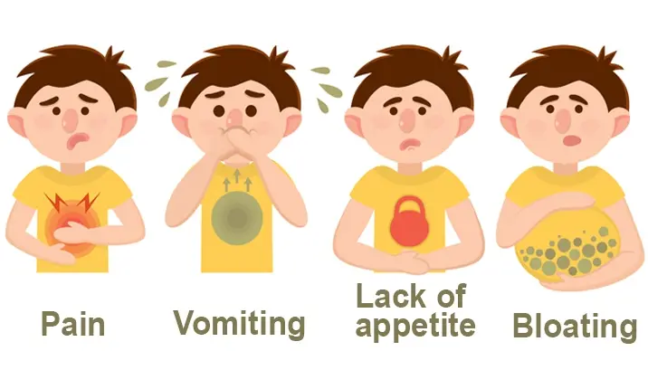
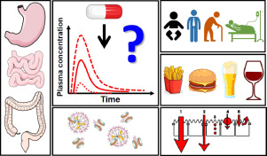

Adverse effects of GI drugs
The gastrointestinal (GI) tract can be affected by various drugs, and these effects can range from minor discomfort to serious complications. Some common adverse effects of drugs used in GI diseases include:
 



- Nausea and Vomiting: Many medications used to treat GI disorders, such as antibiotics, nonsteroidal anti-inflammatory drugs (NSAIDs), and chemotherapy drugs, can cause nausea and vomiting as side effects.
- Gastrointestinal Bleeding:NSAIDs, anticoagulants, and corticosteroids are among the drugs that can increase the risk of gastrointestinal bleeding by damaging the lining of the stomach or intestines.
- Ulcers: Certain medications, particularly NSAIDs, can lead to the development of ulcers in the stomach or small intestine. These ulcers can cause symptoms such as abdominal pain, bloating, and gastrointestinal bleeding.
- Diarrhea or Constipation: Some medications, including antibiotics, laxatives, and certain antidepressants, can disrupt the normal balance of bacteria in the GI tract, leading to diarrhea or constipation.
- Gastrointestinal Perforation: In rare cases, certain drugs may cause perforation (a hole) in the wall of the stomach, small intestine, or large intestine, leading to a medical emergency that requires immediate treatment.
- Liver Damage:Some medications used to treat GI disorders, such as certain antibiotics and chemotherapy drugs, can cause liver damage as a side effect. Symptoms of liver damage may include jaundice (yellowing of the skin and eyes), abdominal pain, and abnormal liver function tests.
- Pancreatitis:Certain drugs, including certain antibiotics, immunosuppressants, and chemotherapy drugs, can cause inflammation of the pancreas, leading to pancreatitis. Symptoms of pancreatitis may include severe abdominal pain, nausea, and vomiting.
- Pancreatitis:Certain drugs, including certain antibiotics, immunosuppressants, and chemotherapy drugs, can cause inflammation of the pancreas, leading to pancreatitis. Symptoms of pancreatitis may include severe abdominal pain, nausea, and vomiting.
- Malabsorption:Some medications can interfere with the absorption of nutrients in the GI tract, leading to deficiencies in vitamins and minerals. For example, long-term use of proton pump inhibitors (PPIs), used to treat acid reflux and ulcers, can impair the absorption of calcium, magnesium, and vitamin B12.
It's important for patients to be aware of potential side effects of medications used to treat GI disorders and to discuss any concerns with their healthcare provider. Healthcare providers should also carefully consider the risks and benefits of medications before prescribing them and monitor patients for potential adverse effects.